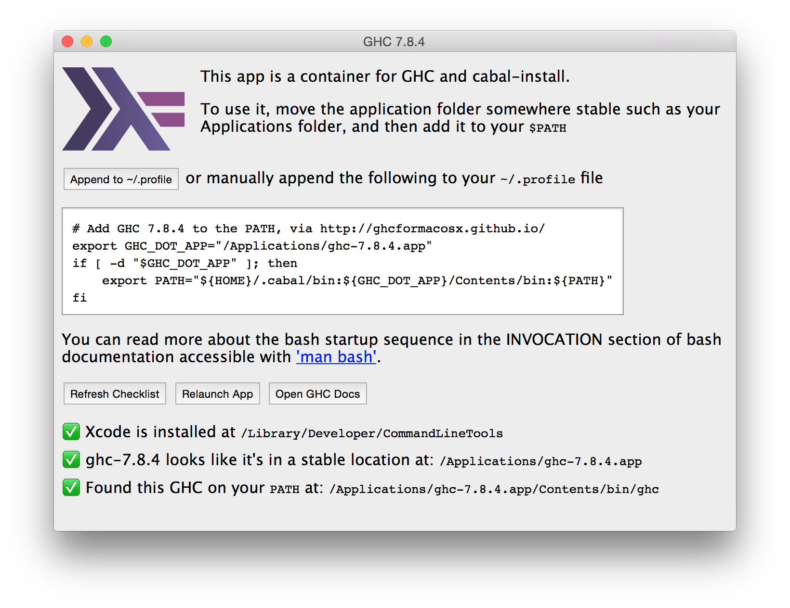

2015-02-25
Update (2016-05-16)
Most of the information below is now out of date. The stack build tool has made everything much simpler. Getting started just a case of installing with
... and then leaving the management of ghc installations up to stack.
Haskell on Yosemite (OSX 10.10)
Nearly all my development has been done under linux. Only occasionally have I worked under osx. This is all to change - osx is to be my primary development platform. In the past, my experiences with ghc on osx have been a little fraught. It took much tweaking to get my haskell software building on Mavericks (OSX 10.9). Problems I had included:
- issues with ghc 7.6 and the xcode c preprocessor
- manual management of the c dependencies of various packages, and then getting cabal to find them
- getting gtk to build
etc, etc.
I'm pleased to discover that things have improved immensely. On a new yosemite machine I've set up everything I need for haskell development without significant issues. A combination of 3 things work together:
- The "ghcformacosx" minimal distribution
- The brew OSX package manager
- Cabal sandboxes
What follows is an overview of the steps I took to get up and running in haskell on osx 10.10.
1. Install the xcode command line tools
Everything (including ghc) seems to depend on these.
2. Install Brew
This is quick and easy, following the instructions on the brew homepage.
3. Install ghcformacosx
"ghcformacosx" is a "drag and drop" installation of ghc 7.8.4 and cabal 1.22.0.0. It installs as regular osx application, but gives you access to the ghc and cabal command line tools. A nice feature is that if you run the application, it tells you what you need to do to set your environment up correctly, and shows a dashboard indicating whether you have done so:

Once this is done you need to bring the local package database up to date:
4. Use brew to install some key tools and libraries
One of my libraries has pcre-light as a transitive dependency. It needs a corresponding c library. Also cairo is the fastest rendering backend for my haskell charting library, and gtk is necessary if you want to show charts in windows. Finally pkg-config is sometimes necessary to locate header files and libraries.
brew install pkg-config
brew install pcre
# gtk and cairo need xquartz
brew tap Caskroom/cask
brew install Caskroom/cask/xquartz
# later steps in the build processes need to find libraries
# like xcb-shm via package config. Tell pkg-config
# where they are.
export PKG_CONFIG_PATH=/opt/X11/lib/pkgconfig
brew install cairo
brew install gtkA nice feature of brew is that whilst it installs libraries and headers to versioned directories in /usr/local/Cellar, it symlinks these back into the expected locations in /usr/local. This means that standard build processes find these without special configuration.
5. Setup some favorite command line tools
I use pandoc and ghc-mod alot, and still need darcs sometimes. Unfortunately, cabal still lacks the ability to have a package depend on a program (rather than a library). Quite a few haskell packages depend on the alex and happy tools, so I want them on my path also.
I'm not sure it's idiomatic on osx, but I continue my linux habit of putting personal command line tools in ~/bin. I like to build all of these tools in a single cabal sandbox, and then link them into ~/bin. Hence, assuming ~/bin is on my path:
cd ~/bin
mkdir hackage
(cd hackage && cabal sandbox init)
(cd hackage && cabal sandbox install alex happy)
ln -s hackage/.cabal-sandbox/bin/alex
ln -s hackage/.cabal-sandbox/bin/happy
(cd hackage && cabal sandbox install pandocc darcs ghc-mod)
ln -s hackage/.cabal-sandbox/bin/pandoc
ln -s hackage/.cabal-sandbox/bin/darcs
ln -s hackage/.cabal-sandbox/bin/ghc-mod(In the sequence above I had to make sure that alex and happy were linked onto the PATH before building ghc-mod)
6. Build gtk2hs in its own sandbox
The hard work is already done by brew. We can use build gtk2hs following the standard build instructions:
export PKG_CONFIG_PATH=/opt/X11/lib/pkgconfig
export PATH=.cabal-sandbox/bin:$PATH
mkdir gtk2hs
cd gtk2hs
cabal sandbox init
cabal install gtk2hs-buildtools
cabal install gtkNote how we need to ensure that the sandbox is on the path, so that the command line tools built in the first call to cabal install can be found in the second.
Summary
All in all, this process was much smoother than before. Both ghcformacosx and brew are excellent pieces of work - kudos to their developers. ghc is, of course, as awesome as ever. When used with sandboxes cabal works well (despite the "cabal hell" reputation). However, having to manually resolve dependencies on build tools is tedious, I'd really like to see this cabal issue resolved.
Update [2015-03-01]
One issue cropped up after this post. It turns out that ghc-mod has some constraints on the combinations of ghc and cabal versions, and unfortunately the combination provided in ghcformacosx is not supported. I worked around this by installing a older version of cabal in ~/bin: